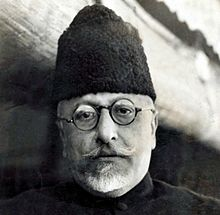

Abul Kalam Ghulam Muhiyuddin Ahmed bin Khairuddin Al-Hussaini Azad (11 November 1888 || 22 February 1958) was an Indian independence activist, Islamic theologian, writer and a senior leader of the Indian National Congress. Following India's independence, he became the First Minister of Education in the Indian government. He is commonly remembered as Maulana Azad; the word Maulana is an honorific meaning 'Our Master' and he had adopted Azad (Free) as his pen name. His contribution to establishing the education foundation in India is recognised by celebrating his birthday as National Education Day across India.
As a young man, Azad composed poetry in Urdu, as well as treatises on religion and philosophy. He rose to prominence through his work as a journalist, publishing works critical of the British Raj and espousing the causes of Indian nationalism. Azad became the leader of the Khilafat Movement, during which he came into close contact with the Indian leader Mahatma Gandhi. Azad became an enthusiastic supporter of Gandhi's ideas of non-violent civil disobedience, and worked to organise the non-co-operation movement in protest of the 1919 Rowlatt Acts. Azad committed himself to Gandhi's ideals, including promoting Swadeshi (indigenous) products and the cause of Swaraj (Self-rule) for India. In 1923, at an age of 35, he became the youngest person to serve as the President of the Indian National Congress.
In October 1920, Azad was elected as a member of foundation committee to establish Jamia Millia Islamia at Aligarh in U. P. without taking help from British colonial government. He assisted in shifting the campus of the university from Aligarh to New Delhi in 1934. The main gate (Gate No. 7) to the main campus of the university is named after him.
Azad was one of the main organizers of the Dharasana Satyagraha in 1931, and emerged as one of the most important national leaders of the time, prominently leading the causes of Hindu–Muslim unity as well as espousing secularism and socialism. He served as Congress president from 1940 to 1945, during which the Quit India rebellion was launched. Azad was imprisoned, together with the entire Congress leadership. He also worked for Hindu–Muslim unity through the Al-Hilal newspaper.
Struggle for Indian Independence
In 1908, he took a trip of Egypt, Syria, Turkey and France where he came into contact with several revolutionaries such as followers of Kamal Mustafa Pasha, members of Young Turk Movement and Iranian revolutionaries.[17] Azad developed political views considered radical for most Muslims of the time and became a full-fledged Indian nationalist.[8] In his writing, Azad proved to be a fierce critic of both the British government and Muslim politicians; the former for its racial discrimination and refusal to provide for the needs of the Indian public, and the later for focusing on communal issues before matter of common-self interest (Azad pointedly rejected the All-India Muslim League's communal separatism). However, his views changed considerably when he met ethnically oriented Sunni revolutionary activists in Iraq[18] and was influenced by their fervent anti-imperialism and Arab nationalism.[8] Against common Muslim opinion of the time, Azad opposed the partition of Bengal in 1905 and became increasingly active in revolutionary activities, to which he was introduced by the prominent Hindu revolutionaries Aurobindo Ghosh and Shyam Sundar Chakravarty. Azad initially evoked surprise from other revolutionaries, but Azad won their praise and confidence by working secretly to organise revolutionaries activities and meetings in Bengal, Bihar and Bombay (now called Mumbai).
Congress Leader
Azad served on the Congress Working Committee and in the offices of general secretary and president many times. The political environment in India re-energised in 1928 with nationalist outrage against the Simon Commission appointed to propose constitutional reforms. The commission included no Indian members and did not even consult Indian leaders and experts. In response, the Congress and other political parties appointed a commission under Motilal Nehru to propose constitutional reforms from Indian opinions. In 1928, Azad endorsed the Nehru Report, which was criticised by the Ali brothers and Muslim League politician Muhammad Ali Jinnah. Azad endorsed the ending of separate electorates based on religion, and called for an independent India to be committed to secularism. At the 1928 Congress session in Guwahati, Azad endorsed Gandhi's call for dominion status for India within a year. If not granted, the Congress would adopt the goal of complete political independence for India. Despite his affinity for Gandhi, Azad also drew close to the young radical leaders Jawaharlal Nehru and Subhash Bose, who had criticised the delay in demanding full independence. Azad developed a close friendship with Nehru and began espousing socialism as the means to fight inequality, poverty and other national challenges. Azad decided the name of Muslim political party Majlis-e-Ahrar-ul-Islam. He was also a friend of Syed Ata Ullah Shah Bukhari, founder of All India Majlis-e-Ahrar. When Gandhi embarked on the Dandi Salt March that inaugurated the Salt Satyagraha in 1930, Azad organised and led the nationalist raid, albeit non-violent on the Dharasana salt works to protest the salt tax and restriction of its production and sale. The biggest nationalist upheaval in a decade, Azad was imprisoned along with millions of people, and would frequently be jailed from 1930 to 1934 for long periods of time. Following the Gandhi-Irwin Pact in 1931, Azad was amongst millions of political prisoners released.
Books by Abul Kalam Azad
Abul Kalam Azad was remembered for his contribution to the freedom struggle along with many leaders. But his biggest contributions to the country has been in education and writing. Students should not miss the books by Abul Kalam Azad on National Education Day. Explore best Abul Kalam Azad books.
- India Wins Freedom
- Maulana Abul Kalam Azad : Vichar Yatra
- Ghubar-I-Khatir
- Ummul Kitab Yani Tafseer Suratul Fatih
- Khutbaat-e-Azad
- Ummul Kitab Yani Tafseer Suratul Fatih
- Khutbaat-e-Azad
- Ummul Kitab Yani Tafseer Suratul Fatih
- Khutbaat-e-Azad
- Ummul Kitab Yani Tafseer Suratul Fatih
- Khutbaat-e-Azad

He is celebrated as one of the founders and greatest patrons of the Jamia Millia Islamia. Azad's tomb is located next to the Jama Masjid in Delhi. In recent years great concern has been expressed by many in India over the poor maintenance of the tomb.[33] On 16 November 2005 the Delhi High Court ordered that the tomb of Maulana Azad in New Delhi be renovated and restored as a major national monument. Azad's tomb is a major landmark and receives large numbers of visitors annually.